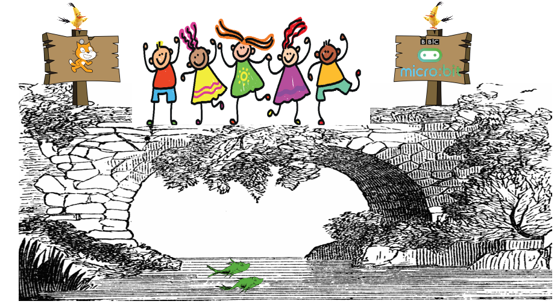

Last Updated: 28 November 2017
So, What is s2m?
s2m is an open source Python program that acts as a bridge between the Scratch 2 off-line editor and the micro:bit computer. It allows you to easily create Scratch programs that interact with the micro:bit.
Major Features
- s2m is compatible with both Python 2 and Python 3.
- It runs on Windows, Mac, Raspberry Pi and Linux.
- It is easy to install.
- It is easy to use.
- And it is a whole lot of fun!

Why The Scratch Off-Line Editor?
Many schools have limited or no internet connectivity. Using the off-line editor allows the maximum number of students to have access to s2m. In addition, using the off-line version means that Raspberry Pi users can also enjoy programming with s2m.
What Is In This Guide?
This guide will:
-
Show you how to install s2m
-
Explain how to use s2m
-
Provide a description of the s2m custom Scratch Blocks
-
Discuss how s2m works
Want To See The Source Code?
The full source code is available on Github
Comments or Questions?
If you have any comments, questions or suggestions, please contact me at:
or enter an issue on Github.